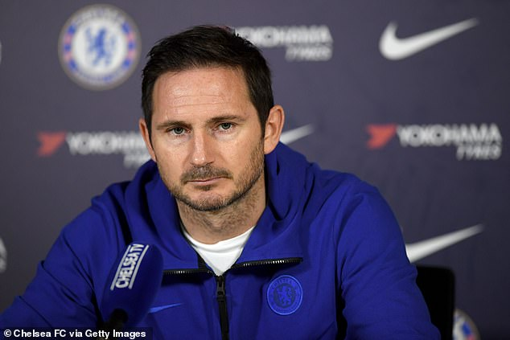

Futebol
Craques: Phil Foden, Walker, Pickford, Alexander-Arnold, Kane, Bellingham.
Melhores jogadores da história: Wayne Rooney, Steven Gerrard, David Beckham, Lampard.
Lampard

- Nome completo: Frank James Lampard
- Data de nascimento: 20 de junho de 1978
- Local de nascimento: Londres, Reino Unido
- Nacionalidade: inglês
- Altura: 1,83
- Apelido: Super Frankl